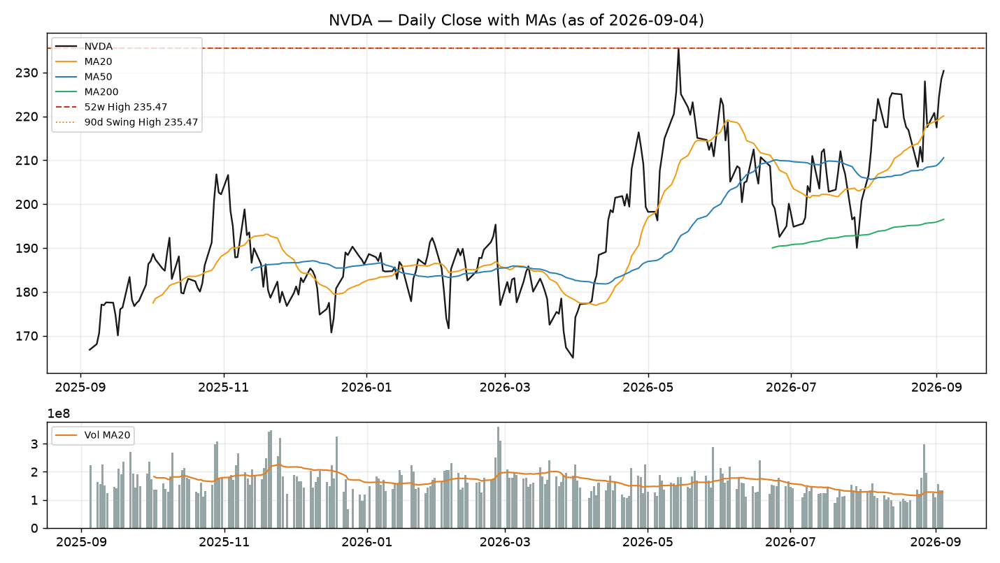

Price holds above the 20-day (220.08), 50-day (210.57) and 200-day (196.53) moving averages, and the three lines fan upward — the strongest phase of a trend, not a high-level stagnation. Since the 164.98 low, price has never lost the 200-day; the recent retest of the 50-day (~210) was bought, and it has powered back to the highs. This is a stock coiling at the top of its range after a healthy reset, not rolling over.
It was set on 14 May 2026 — about 78 sessions ago — and everything since has coiled in a 190–235 range. Structurally this is a high-level consolidation re-attacking the prior high — not a bottom breakout. A daily close through 235.47, ideally on expanding volume, is the confirmation: once it clears, there is no overhead supply left, so the path above is defined by momentum extension rather than by historical resistance. A repeated rejection up there, especially on a long upper wick, turns 235 into a double-top neckline pressure, and the retest target becomes the 20-day (220) then the 50-day (210).

NVDA daily — price with MA20/50/200, 52-week high (235.47) and volume. Reference chart; the live TV post reproduces this via the in-chart setup in the drawing memo.
RSI(14) reads 60.4 — not overbought, with room to run — while RSI(6) at 66.8 flags the recent 5-day +5.89% pop. MACD stays bullish (line 3.83 > signal 2.99, histogram +0.84). The tell: most names test highs with RSI already 75+, NVDA isn't there yet, so momentum isn't burned at the attempt.
Turnover / 20-day average is 1.05 — following, not confirming. A genuine breakout usually needs >1.5x average volume to be believed; today's tape is healthy but not decisive.
Our market-temperature model reads the Nasdaq around 69 (defensive) while the S&P sits near 80 (neutral). NVDA pressing record alone is the "AI selectivity" theme still alive — money concentrated in the compute leader while peers such as AVGO have already rolled over. A confirmed NVDA breakout is a positive drag on semiconductor risk appetite and can pull the group higher; a failed one usually takes the sector's mood with it.